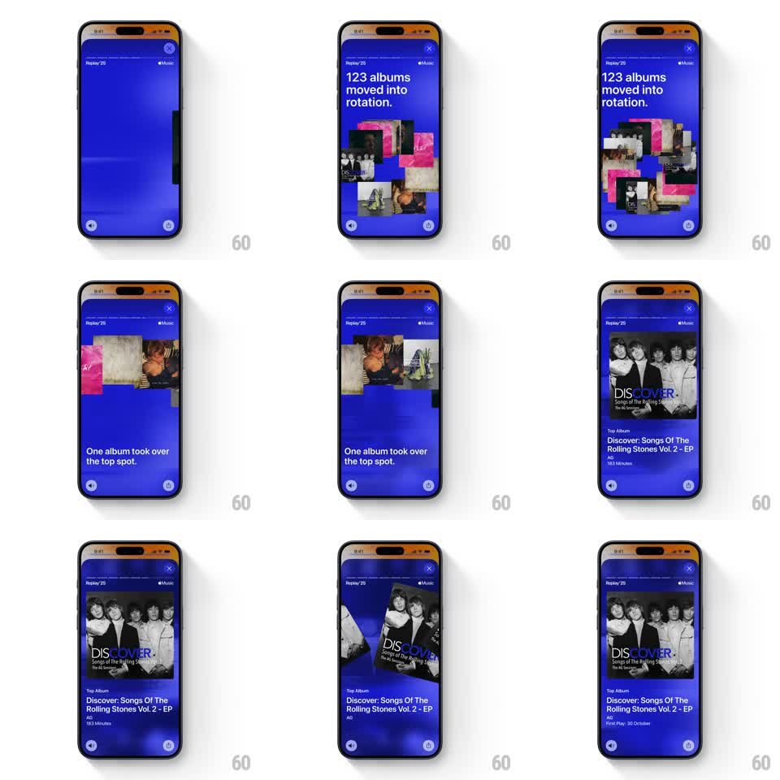

Media
Frame-by-frame

Rebuild this animation 1:1: Apple Music Replay '25 top-album story - album covers burst outward and swirl in a circular orbit under "123 albums moved into rotation.", then converge as the copy flips to "One album took over the top spot." and the winning album art settles in as a hero card with its stats.

Rebuild this animation 1:1: Apple Music Replay '25 top-album story - album covers burst outward and swirl in a circular orbit under "123 albums moved into rotation.", then converge as the copy flips to "One album took over the top spot." and the winning album art settles in as a hero card with its stats.
## Integration
Integration: stack-agnostic spec - springs given as stiffness/damping, timed motions as duration + curve; map every value to your framework and animation library of choice.
## Scene
Deep blue story screen ("Replay '25" wordmark and Music logo top, close (x) top-right, pager arrows bottom corners). Phase 1: headline "123 albums moved into rotation." with ~12 small album covers scattered mid-screen. Phase 2: headline "One album took over the top spot." while covers travel a circular path. Phase 3: the top album cover enlarges into a centered hero card ("Top Album" label, title, artist, genre, minutes) as the rest exit.
## Motion spec
Pattern: particle orbit converge-to-hero, ~4s.
- Burst: covers scale/fade in from center (spring ~320/18, 30ms stagger) and spread to random orbit positions.
- Orbit: covers travel a shared circular path (radius ~35% of screen width), each offset in phase, ~2.5s per revolution, slight scale pulse at the front of the pack.
- Copy flip: first headline fades/slides up out, second fades in (250ms each).
- Converge: on phase 3 all covers spiral inward (400ms, ease-in); the top album keeps scaling to ~70% width (spring ~260/20) while the others shrink out.
- Stats block fades/slides up under the hero card (300ms, ease-out); the hero then idles with a gentle 2-3deg tilt sway.
## Calibration
- Covers stay small (48-72px) during orbit - large tiles turn the swirl into a grid.
- The hero card must read as the same tile that orbited; keep one cover continuous through the converge.
## Reduced motion
Skip the orbit: cover grid fades in, then cross-fade to the hero card with stats (300ms each).
## Don't miss
- The background stays flat deep blue throughout - no gradient change between phases.
- Stats include label "Top Album", full title, artist, genre tag, and total minutes.